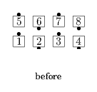
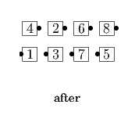
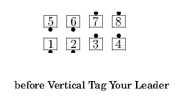
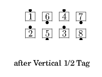
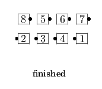

From Parallel Waves: Leaders 1/2 Split Circulate and Tandem Cross Fold as Trailers Follow Your Neighbor (Extend and Arm Turn 3/4); all Tandem Extend. Ends in Columns.
 
Starting position depends on the <tag> action. Do the <tag> action to the 1/2 Tag Position; Follow Your Leader.
  
© Copyright 2004-2017 Vic Ceder and CALLERLAB Inc., The International Association of Square Dance Callers. Permission to reprint, republish, and create derivative works without royalty is hereby granted, provided this notice appears. Publication on the Internet of derivative works without royalty is hereby granted provided this notice appears. Permission to quote parts or all of this document without royalty is hereby granted, provided this notice is included. Information contained herein shall not be changed nor revised in any derivation or publication.